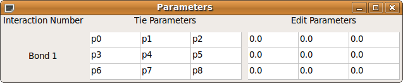
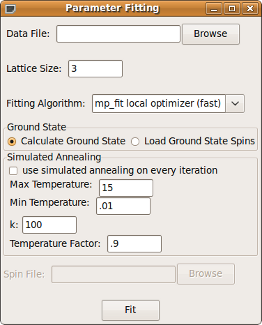

Unknown values in the Jij matrices describing the interactions between atoms can be solved for with dispersion data. First, you must specify which values are to be found, their upper and lower bounds, as well as other parameters which must have the same values. This is done in the parameter window.
This window will pop up with the “Bonds” window to make editing parameters in the Jij matrices easier. If these matrices are known, then you will not need to use this window. However, if you will be fitting parameters in these matrices, this window can make editing parameters easier. On the left, parameters can be “tied” together so that they are forced to have the same values. To do this, click on a cell and then holding Ctrl, click on other cells to tie to that cell. A different color will be used to highlight each set of tied parameters. Click on cells on the right to change parameter properties such as upper and lower bound.
Once all parameter information is entered, go to “Fit Parameters” in the “Compute” menu. The following window will appear:
The data file is a file containing the dispersion data to fit to. It has the format:
h-coordinate h-error k-coordinate k-error l-coordinate l-error w-value w-error
Each value is separated by a space and each data point is on it’s own line. Comment lines can be added by starting a line with the “#” character. H,k, and l error are not currently used in the calculations.
Lattice size is refering to how large you would like to make the lattice to reduce edge effects, just like when calculating the ground state. The fitting algorithm you choose will depend on the system being worked on. The local optimizer will be much faster than the simulated annealing fitter, but may not work for systems with local minima which the local optimizer will get stuck in. The ground state must currently be calculated. In the future you will be able to load this information from a file. The Simulated Annealing Section is the exact same information one would enter to calculate the ground state and is described above in the section on finding the ground state.